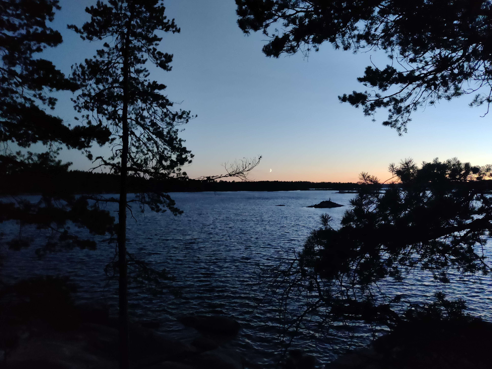

Engine
I'm currently working on my own game engine written in C called Futhark.
It's far from complete, but it has a few prototypes already. It is probably my largest project as of yet.
Games
A few of my prototypes are on itch.io.
These are mostly game jams, but there are some prototypes as well.
About me
My name is Patrik, I'm from Sweden with a love for the act of programming.
I also like a lot of other creative hobbies such as drawing, music, 3d modelling, etc.
Love being out in nature, nothing beats a view like this:
